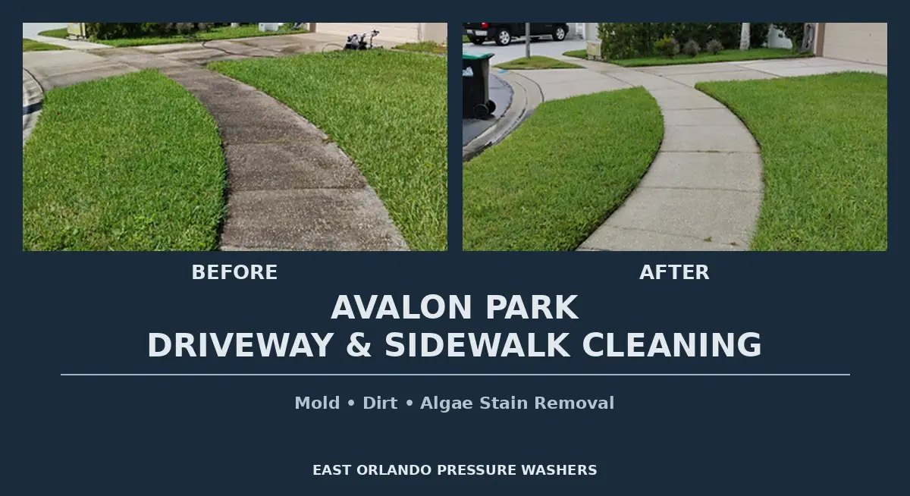

Safe Paths for Your Family
Professional walkway pressure washing — eliminate stains, slip-hazards and deep-seated grime safely
Restore your home's curb appeal with professional walkway pressure washing. We eliminate stubborn concrete stains, slip-hazards, and deep-seated grime.
Safe for your family — we remove the algae and moss that make walkways dangerous while restoring the original color of your concrete paths.

Common questions about walkway cleaning in Orlando
A small front sidewalk may start around $15–$75 as a minimum charge. Longer side or rear runs are typically priced at about $0.15–$0.25 per sq. ft., bringing most jobs to $20–$200 depending on length, surface type (concrete vs. pavers), and mildew buildup. Sidewalk cleaning is significantly discounted when bundled with driveway work — call (407) 499-4773 for a personalized quote.
We recommend at least once per year in Orlando's humid climate to prevent dangerous algae buildup and maintain appearance.